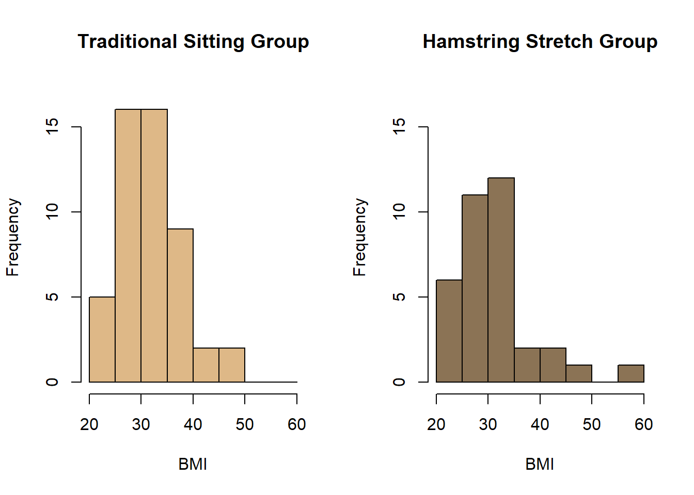
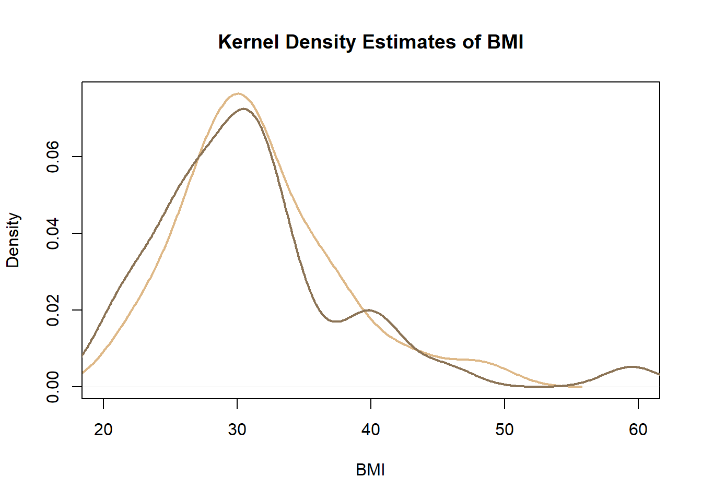
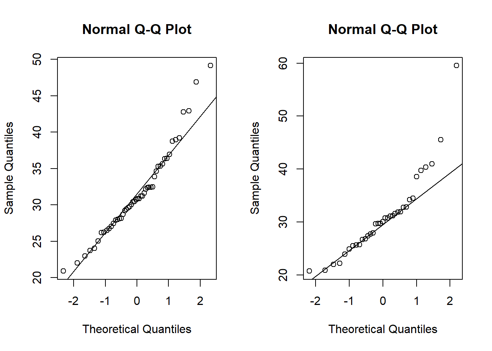
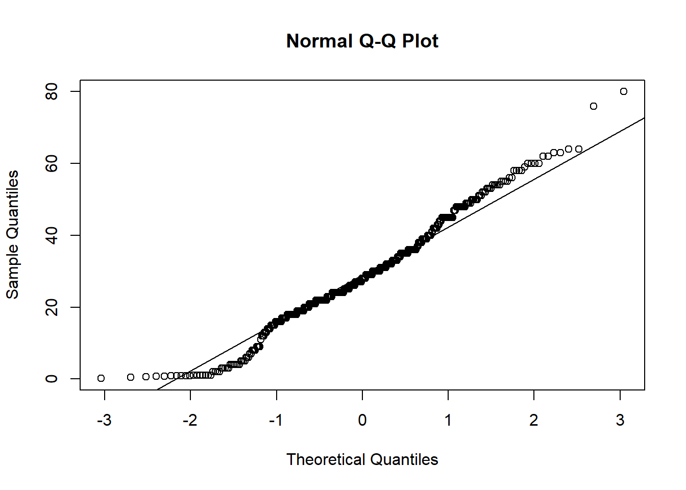

3 Comparing Samples
In statistical analysis it is common to want to compare two samples from different groups or "populations". When comparing two different groups of data, we might want to answer questions about the properties of the data such as are the centers the same? Are the spreads similar? Do the shapes of the distributions look the same?
In order to answer these questions, graphical methods of presenting the data can be useful such as histograms or density plots.
For example, we might wish to compare the distribution of the BMI of patients who are given the epidural anesthetic in the traditional sitting position with the distribution of the BMI of patients in the hamstring stretch group. In order to do this, we first need to calculate the BMI of all patients in the EPIDURAL data set, since BMI is not one of the variables measured.
EPIDURAL$BMI <- EPIDURAL$kg/(EPIDURAL$cm/100)^2Then, in order to make it easier to plot the BMI for the two groups separately, we can create two subsets of the data using the subset() function. The first, BMI_sitting, contains the BMI values for the patients that were given the epidural anesthetic in the traditional sitting position. BMI_hamstring similarly stores BMI values, but for the patients given the anesthetic in the hamstring stretch position.
BMI_sitting <- subset(x = EPIDURAL,
subset = (treatment == "Traditional Sitting"),
select = BMI)
BMI_hamstring <- subset(x = EPIDURAL,
subset = (treatment == "Hamstring Stretch"),
select = BMI)Finally, we want to actually view the shape of the distributions for the two groups to see if they are similar. We can do this using two separate histograms of BMI. It doesn't make any sense to compare histograms when the bin widths or the units used on the axes are different, so the following code ensures that, for both histograms, the width of each bin is 5 units, the x-axes range from 20 to 60 and the y-axes range from 0 to 17.
The line of code par(mfrow = c(1, 2)) is used to view the histograms side by side. This means that plots will be created in a \(1\times 2\) grid, so two plots can be seen together. par(mfrow = c(1, 1)) sets this back to only one plot being shown at a time.
par(mfrow = c(1, 2))
hist(x = BMI_sitting$BMI,
breaks = seq(from = 20, to = 60, by = 5),
col = "burlywood",
ylim = c(0, 17),
main = "Traditional Sitting Group",
xlab = "BMI",
ylab = "Frequency")
hist(x = BMI_hamstring$BMI,
breaks = seq(from = 20, to = 60, by = 5),
col = "burlywood4",
ylim = c(0, 17),
main = "Hamstring Stretch Group",
xlab = "BMI",
ylab = "Frequency")
par(mfrow = c(1, 1))
How would you compare the two distributions shown in the histograms above?
Rather than histograms, we may wish to compare the distributions of BMI in these two groups using kernel density estimates. The following code plots the kernel density estimate of the BMI for the traditional sitting group against the estimate of the distribution for the BMI of the hamstring stretch group.
plot(density(x = BMI_sitting$BMI),
col = "burlywood",
lwd = 2,
xlim = c(20, 60),
main = "Kernel Density Estimates of BMI",
xlab = "BMI")
lines(density(x = BMI_hamstring$BMI),
col = "burlywood4",
lwd = 2)
Again we can see that both distributions are right-skewed, but that the skew for the hamstring stretch group is slightly more extreme.
3.1 QQ Plots
A useful plot for assessing whether data is normally distributed is a normal quantile-quantile (QQ) plot. This uses the quantiles of the standard normal distribution as the \(x\) co-ordinates and the quantiles from the data as the \(y\) co-ordinates. If the data of interest follows a normal distribution, then we would expect to see the points lying roughly along a straight line.
Normal QQ plots can be created in R using the function qqnorm(). The only argument this function needs is y = which gives the vector of data we want to check is normally distributed or not.
We can add a straight line to an existing normal QQ plot using the function qqline(), which also takes the same vector of data in the argument y =.
The code below creates side-by-side normal QQ plots comparing the distributions of BMI in the group of patients given the epidural anesthetic in the traditional sitting position and in the hamstring stretch position with a standard normal distribution.
par(mfrow = c(1, 2))
qqnorm(y = BMI_sitting$BMI)
qqline(y = BMI_sitting$BMI)
qqnorm(y = BMI_hamstring$BMI)
qqline(y = BMI_hamstring$BMI)
par(mfrow = c(1, 1))
We can see in both of these QQ plots that the majority of points roughly follow the plotted straight line. For both groups, the higher quantiles in the distribution of BMI start to stray away from this straight line. This is because both these distributions are right-skewed, suggesting they do not follow a normal distribution.
We can again see that the distribution for the hamstring stretch group (the right-hand plot) is more extremely right-skewed than that for the traditional sitting group. This is shown in these plots because the large quantiles stray further from the straight line in the hamstring stretch group than in the traditional sitting group.
Create a new subset of the TITANIC3 data frame that contains the ages of all passengers who survived the sinking. Plot the quantiles of the distribution of age against the quantiles of a standard normal distribution in a QQ plot.
age_survived <- subset(x = TITANIC3,
subset = (survived == "Yes"),
select = age)
qqnorm(y = age_survived$age)
qqline(y = age_survived$age)
Do you think that the ages of passengers who survived the sinking of the Titanic follow a normal distribution?
You can read more about how normal QQ plots are constructed in Section 4.3.7 Normal (Gaussian) Distribution in Probability and Statistics with R (specifically pages 301-306).